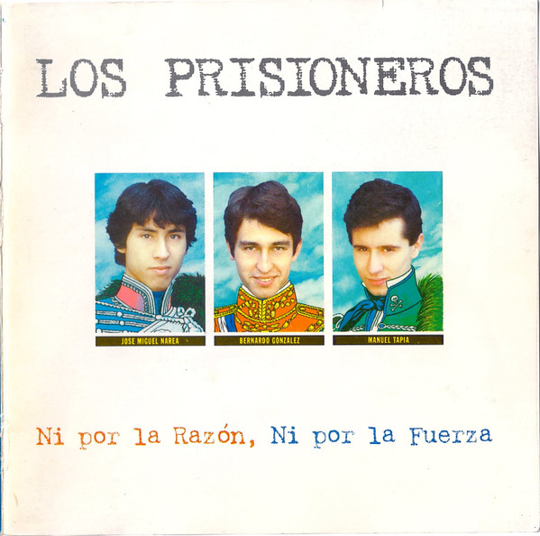

blog de los prisioneros
-------------------------o-------------------------
LOS PRISIONEROS
-------------------------o-------------------------
SPOTIFY
YOUTUBE
Los Prisioneros son el grupo más representativo de la historia del rock chileno. Fueron la banda
sonora del desencanto juvenil en plena dictadura de Augusto Pinochet, y hoy mantienen esa vigencia que define a los clásicos.
Canciones como "La voz de los '80", "El baile de los que sobran", "Tren al sur" o "Sexo" se elevaron como himnos
asistémicos, revolucionarios y contestatarios.
Diversas crisis internas los llevaron a tener dos epocas y varios quiebres, hasta su final, el año 2006.
Pero hoy, con la banda disuelta hace mucho, sus canciones siguen sonando en casi todas las generaciones del público
chileno.
---------------o---------------
INTEGRANTES
---------------o---------------
Se conformaban por:
Jorge González, bajo y voz (1982 - 2006)
Claudio Narea, guitarra (1982 - 1989 / 2001 - 2003)
Miguel Tapia, batería (1982 - 2006)
---------------o---------------
HISTORIA
---------------o---------------
- Inicios
A pesar de toda la fuerza política de Los Prisioneros, la banda nació como un grupo totalmente al margen de
cuestionamientos partidistas o ideológicos. Sus integrantes, se conocieron como compañeros de curso en 1979,
cuando ingresaron a primero medio del Liceo número 6 Andrés Bello, de la comuna de San Miguel.
El 13 de diciembre de 1984 salió a la venta La voz de los ´80, un casette con etiqueta de la recién inaugurada productora Fusión,
grabado bajo la clara influencia musical de los ingleses de The Clash, y que los encumbró como líderes del emergente movimiento musical
que nacía en el país, alimentado por la invasión de pop que llegaba desde Argentina, sobre todo tras la guerra de las Malvinas.
A mediados de 1985, la multinacional EMI logró vencer su propia autocensura y firmó un contrato de distribución con Fusión para que el disco
fuera repartido por todo Chile. Canciones como "Sexo" y "La voz de los 80" invadieron la programación radial, abriendo espacios a los nuevos conjuntos
locales que protagonizarían el llamado boom del pop latino de los años '80. La consolidación definitiva de Los Prisioneros vendría el 1 de noviembre de 1986,
cuando lanzaron el disco Pateando piedras con dos recitales en el Estadio Chile.
Pateando piedras significó el gran salto a la masividad de la banda, el ariete que les permitió vencer la censura que les impuso el oficialismo al vetarlos
en la televisión y en los medios controlados por la dictadura. Letras inteligentes sobre temas sociales, un sonido bailable que se enriqueció con componentes
electrónicos y la acidez del líder González ante la prensa y el público los distinguió definitivamente como la expresión más vistosa e interesante del rock de esos años.
Temas como "Quieren dinero", "Por qué los ricos" o "Muevan las industrias" contenían certeras críticas sociales, eran bailables y representaban a buena parte de la juventud de esos años.
Sin embargo, la prensa los hizo sospechosos y peligrosos, después, para el statu quo alentado por la dictadura. Por eso, sin quererlo y empujados por el propio sistema,
Los Prisioneros fueron obligados a definirse políticamente frente a la contingencia. En 1987, durante una gira extensa por el sur del país, sus recitales comenzaron a
ser prohibidos por las guarniciones militares, hecho que desencadenó que su tercer disco, La cultura de la basura (lanzado en diciembre de ese año), se quedara sin
gira promocional debido al boicot gubernamental.
- Disolución
En pleno apogeo e internacionalización, vino el quiebre. A fines de 1989 y en plena preparación del disco Corazones, las diferencias musicales de Narea y González
se hicieron insalvables. Narea, inclinado por el rocanrol, y el líder, seducido por la electrónica, rompieron su relación envueltos en una enconada disputa que se agravó
por líos amorosos, y que dejó a la banda convertida en un dúo que en mayo de 1990 presentó su cuarta producción.
En 1991, Los Prisioneros llegaron al primer Festival de Viña del Mar en democracia, en un hecho más simbólico que otra cosa, porque la banda ya no tenía la combativa cara
de otros tiempos. De ahí continuó una gira de despedida por todo el país, durante la cual no faltaron los ásperos diálogos con el público. Al término de ese tour se puso
fin a la historia de la banda más importante en la historia del rock chileno. La decisión era definitiva y así se creyó durante toda la década que siguió a su despedida.
- Caminos Separados

Cada Prisionero siguió con sus propios caminos musicales. Claudio Narea había formado Profetas y Frenéticos, banda con la que trabajó intermitente hasta 1996;
Miguel Tapia mantuvo la equívoca carrera de Jardín Secreto; y Jorge González, inició un camino solista que partió con enormes campañas promocionales, pero terminó con
exploraciones en la electrónica y propuestas bastante alejadas de la masividad de antaño. Los tres se reunieron sólo a instancias de la edición del compilatorio
Ni por la razón, ni por la fuerza, que EMI lanzó con sencillos y rarezas en 1996.
Tras reuniones sociales entre ellos, en marzo se cuajó el acuerdo de reunirse, y en julio comenzaron los ensayos, que dos meses después se materializaron
en un single: "Las sierras eléctricas" (tema ya incluído en el compilado Ni por la razón, ni por la fuerza). El rumor, entonces, se confirmaba: Los Prisioneros,
con su formación original, estaban de regreso.
- El Regreso y Termino
El 9 de octubre de 2001 la banda dio su primera conferencia de prensa, con los tres integrantes anunciando un masivo concierto en el coliseo central del Estadio Nacional
y la producción de un disco con material nuevo. La convocatoria, en todo caso, tuvo un enorme éxito, y la banda debió aumentar su actuación a dos jornadas en virtud del exceso
de demanda. El 30 de noviembre y el 1 de diciembre de ese año, Los Prisioneros convocaron a un total de 140 mil personas, en sendos conciertos de casi tres horas donde repasaron
buena parte de su repertorio de los años '80.
A fines de 2005, la banda anunció que no grabaría material nuevo y que únicamente se presentaría en vivo. Con esa decisión, y en medio de su conocido hermetismo, Los Prisioneros
continuaron con sus giras por distintos países latinoamericanos, en una agenda de actividades de las que en Chile sólo se sabía por medios extranjeros o por la página web de la banda.
Fue por esos canales que un verano llegó la noticia del fin de Los Prisioneros. Tras presentarse en el Festival de La Serena, el grupo viajó a hacer un show breve en Caracas,
Venezuela, donde protagonizó un tenso episodio: En un camarín, mientras el público pedía su regreso al escenario, González comunicó al empresario que organizaba el concierto que no saldrían
de nuevo a escena, por una razón poderosa: La banda se había terminado. El fin fue el 18 de febrero de 2006.